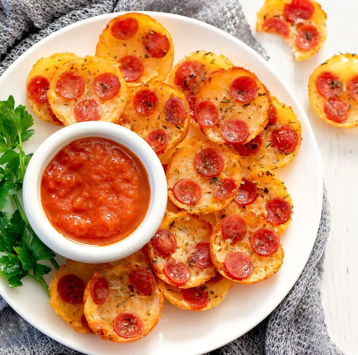

Pizza Chips

These pizza chips are so fun and tasty. My whole family loved them, even those not following a keto diet. And they only take about 20 minutes to make!
Ingredients
- Mozzarella Cheese
- Pepperoni
Steps
- Preheat oven to 350°F. Grease the interior of a mini muffin pan. This recipe yields 16 chips so you only need to grease 16 cups.
- Add 2 tsp of mozzarella to each greased cup. Lightly pat down the mozzarella into the cups. Place 3 slices of mini pepperoni on each chip. If desired, sprinkle a little Italian seasoning on top of each chip. This is optional but does add more flavor.
- Bake chips for about 8 minutes or until edges are a dark golden brown. Let chips cool in muffin pan until they are cool enough to touch. Remove chips from pan. I like to place the chips on a plate lined with a paper towel to soak up some of the excess oil from the cheese and pepperoni. Serve pepperoni chips while warm. They can be eaten plain or served with marinara sauce.